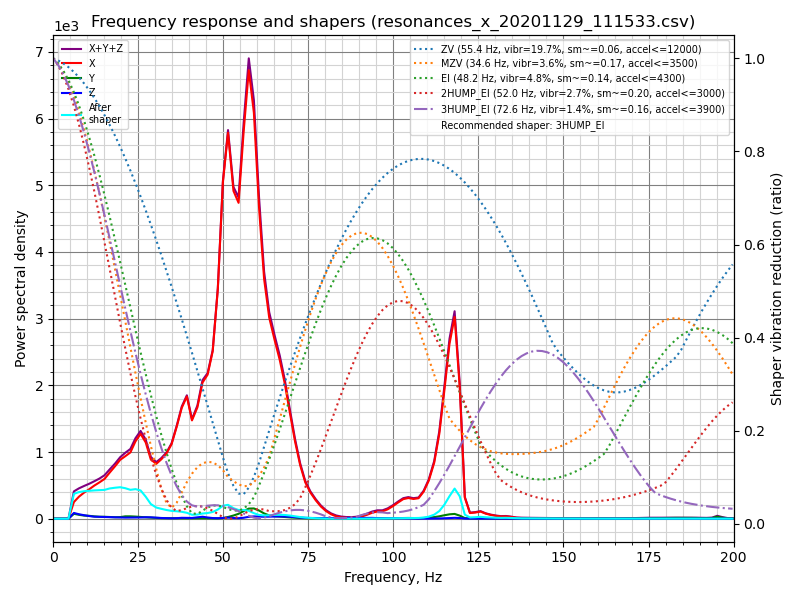

共振值測量¶
Klipper has built-in support for the ADXL345, MPU-9250, LIS2DW and LIS3DH compatible accelerometers which can be used to measure resonance frequencies of the printer for different axes, and auto-tune input shapers to compensate for resonances. Note that using accelerometers requires some soldering and crimping. The ADXL345 can be connected to the SPI interface of a Raspberry Pi or MCU board (it needs to be reasonably fast). The MPU family can be connected to the I2C interface of a Raspberry Pi directly, or to an I2C interface of an MCU board that supports 400kbit/s fast mode in Klipper. The LIS2DW and LIS3DH can be connected to either SPI or I2C with the same considerations as above.
When sourcing accelerometers, be aware that there are a variety of different PCB board designs and different clones of them. If it is going to be connected to a 5V printer MCU ensure it has a voltage regulator and level shifters.
For ADXL345s, make sure that the board supports SPI mode (a small number of boards appear to be hard-configured for I2C by pulling SDO to GND).
For MPU-9250/MPU-9255/MPU-6515/MPU-6050/MPU-6500/ICM20948s and LIS2DW/LIS3DH there are also a variety of board designs and clones with different I2C pull-up resistors which will need supplementing.
MCUs with Klipper I2C fast-mode Support¶
| MCU Family | MCU(s) Tested | MCU(s) with Support |
|---|---|---|
| Raspberry Pi | 3B+, Pico | 3A, 3A+, 3B, 4 |
| AVR ATmega | ATmega328p | ATmega32u4, ATmega128, ATmega168, ATmega328, ATmega644p, ATmega1280, ATmega1284, ATmega2560 |
| AVR AT90 | - | AT90usb646, AT90usb1286 |
| SAMD | SAMC21G18 | SAMC21G18, SAMD21G18, SAMD21E18, SAMD21J18, SAMD21E15, SAMD51G19, SAMD51J19, SAMD51N19, SAMD51P20, SAME51J19, SAME51N19, SAME54P20 |
安裝指南¶
接線¶
An ethernet cable with shielded twisted pairs (cat5e or better) is recommended for signal integrity over a long distance. If you still experience signal integrity issues (SPI/I2C errors):
- Double check the wiring with a digital multimeter for:
- Correct connections when turned off (continuity)
- Correct power and ground voltages
- I2C only:
- Check the SCL and SDA lines' resistances to 3.3V are in the range of 900 ohms to 1.8K
- For full technical details consult chapter 7 of the I2C-bus specification and user manual UM10204 for fast-mode
- Shorten the cable
Connect ethernet cable shielding only to the MCU board/Pi ground.
Double-check your wiring before powering up to prevent damaging your MCU/Raspberry Pi or the accelerometer.
SPI Accelerometers¶
Suggested twisted pair order for three twisted pairs:
GND+MISO
3.3V+MOSI
SCLK+CS
Note that unlike a cable shield, GND must be connected at both ends.
ADXL345¶
Direct to Raspberry Pi¶
Note: Many MCUs will work with an ADXL345 in SPI mode (e.g. Pi Pico), wiring and configuration will vary according to your specific board and available pins.
我們需要將ADXL345連線到樹莓派的SPI介面。注意，儘管ADXL345文件推薦使用I2C，但其數據吞吐能力不足，不能實現共振測量的要求。推薦的接線圖為：
| ADXL345引腳 | 樹莓派引腳 | 樹莓派引腳名稱 |
|---|---|---|
| 3V3 或 VCC | 01 | 3.3V DC power |
| GND | 06 | 地（GND） |
| CS | 24 | GPIO08 (SPI0_CE0_N) |
| SDO | 21 | GPIO09 (SPI0_MISO) |
| SDA | 19 | GPIO10 (SPI0_MOSI) |
| SCL | 23 | GPIO11 (SPI0_SCLK) |
部分ADXL345開發板的Fritzing接線圖如下：

Using Raspberry Pi Pico¶
You may connect the ADXL345 to your Raspberry Pi Pico and then connect the Pico to your Raspberry Pi via USB. This makes it easy to reuse the accelerometer on other Klipper devices, as you can connect via USB instead of GPIO. The Pico does not have much processing power, so make sure it is only running the accelerometer and not performing any other duties.
In order to avoid damage to your RPi make sure to connect the ADXL345 to 3.3V only. Depending on the board's layout, a level shifter may be present, which makes 5V dangerous for your RPi.
| ADXL345引腳 | Pico pin | Pico pin name |
|---|---|---|
| 3V3 或 VCC | 36 | 3.3V DC power |
| GND | 38 | 地（GND） |
| CS | 2 | GP1 (SPI0_CSn) |
| SDO | 1 | GP0 (SPI0_RX) |
| SDA | 5 | GP3 (SPI0_TX) |
| SCL | 4 | GP2 (SPI0_SCK) |
Wiring diagrams for some of the ADXL345 boards:

I2C Accelerometers¶
Suggested twisted pair order for three pairs (preferred):
3.3V+GND
SDA+GND
SCL+GND
or for two pairs:
3.3V+SDA
GND+SCL
Note that unlike a cable shield, any GND(s) should be connected at both ends.
MPU-9250/MPU-9255/MPU-6515/MPU-6050/MPU-6500/ICM20948¶
These accelerometers have been tested to work over I2C on the RPi, RP2040 (Pico) and AVR at 400kbit/s (fast mode). Some MPU accelerometer modules include pull-ups, but some are too large at 10K and must be changed or supplemented by smaller parallel resistors.
Recommended connection scheme for I2C on the Raspberry Pi:
| MPU-9250 pin | 樹莓派引腳 | 樹莓派引腳名稱 |
|---|---|---|
| VCC | 01 | 3.3v 直流（DC）電源 |
| GND | 09 | 地（GND） |
| SDA | 03 | GPIO02 (SDA1) |
| SCL | 05 | GPIO03 (SCL1) |
The RPi has buit-in 1.8K pull-ups on both SCL and SDA.

Recommended connection scheme for I2C (i2c0a) on the RP2040:
| MPU-9250 pin | RP2040 pin | RP2040 pin name |
|---|---|---|
| VCC | 36 | 3v3 |
| GND | 38 | 地（GND） |
| SDA | 01 | GP0 (I2C0 SDA) |
| SCL | 02 | GP1 (I2C0 SCL) |
The Pico does not include any built-in I2C pull-up resistors.

Recommended connection scheme for I2C(TWI) on the AVR ATmega328P Arduino Nano:¶
| MPU-9250 pin | Atmega328P TQFP32 pin | Atmega328P pin name | Arduino Nano pin |
|---|---|---|---|
| VCC | 39 | - | - |
| GND | 38 | 地（GND） | GND |
| SDA | 27 | SDA | A4 |
| SCL | 28 | SCL | A5 |
The Arduino Nano does not include any built-in pull-up resistors nor a 3.3V power pin.
固定加速度感測器¶
加速度感測器應固定在列印頭上。應根據印表機的情況設計合適的固定件。推薦將加速度的測量軸與印表機執行軸的方向進行對齊。然而，如果軸對齊極其麻煩，可以將印表機的軸使用其他測量軸對齊，比如印表機+X對應感測器-X，甚至印表機+X對應感測器-Z等。
下面是ADXL345固定到SmartEffector的示例：

注意，滑床式印表機需要設計兩個固定件：一個安裝于列印頭，另一個用於熱床，並進行兩次測量。詳見 對應分節。
注意：務必確保加速度感測器和任何螺絲都不應該接觸到印表機的金屬部分。緊韌體必須設計成在加速度感測器和印表機框體間形成電氣絕緣。錯誤的設計可能會形成短路，從而損毀電氣元件。
軟體設定¶
Note that resonance measurements and shaper auto-calibration require additional software dependencies not installed by default. First, run on your Raspberry Pi the following commands:
sudo apt update
sudo apt install python3-numpy python3-matplotlib libatlas-base-dev libopenblas-dev
Next, in order to install NumPy in the Klipper environment, run the command:
~/klippy-env/bin/pip install -v "numpy<1.26"
Note that, depending on the performance of the CPU, it may take a lot of time, up to 10-20 minutes. Be patient and wait for the completion of the installation. On some occasions, if the board has too little RAM the installation may fail and you will need to enable swap. Also note the forced version, due to newer versions of NumPY having requirements that may not be satisfied in some klipper python environments.
Once installed please check that no errors show from the command:
~/klippy-env/bin/python -c 'import numpy;'
The correct output should simply be a new line.
Configure ADXL345 With RPi¶
First, check and follow the instructions in the RPi Microcontroller document to setup the "linux mcu" on the Raspberry Pi. This will configure a second Klipper instance that runs on your Pi.
通過執行sudo raspi-config 后的 "Interfacing options"菜單中啟用 SPI 以確保Linux SPI 驅動已啟用。
在printer.cfg附上下面的內容：
[mcu rpi]
serial: /tmp/klipper_host_mcu
[adxl345]
cs_pin: rpi:None
[resonance_tester]
accel_chip: adxl345
probe_points:
100, 100, 20 # an example
建議在測試開始前，用探針在熱床中央進行一次探測，觸發后稍微上移。
Configure ADXL345 With Pi Pico¶
Flash the Pico Firmware¶
On your Raspberry Pi, compile the firmware for the Pico.
cd ~/klipper
make clean
make menuconfig

Now, while holding down the BOOTSEL button on the Pico, connect the Pico to the Raspberry Pi via USB. Compile and flash the firmware.
make flash FLASH_DEVICE=first
If that fails, you will be told which FLASH_DEVICE to use. In this example, that's make flash FLASH_DEVICE=2e8a:0003. 
Configure the Connection¶
The Pico will now reboot with the new firmware and should show up as a serial device. Find the pico serial device with ls /dev/serial/by-id/*. You can now add an adxl.cfg file with the following settings:
[mcu adxl]
# Change <mySerial> to whatever you found above. For example,
# usb-Klipper_rp2040_E661640843545B2E-if00
serial: /dev/serial/by-id/usb-Klipper_rp2040_<mySerial>
[adxl345]
cs_pin: adxl:gpio1
spi_bus: spi0a
axes_map: x,z,y
[resonance_tester]
accel_chip: adxl345
probe_points:
# Somewhere slightly above the middle of your print bed
147,154, 20
[output_pin power_mode] # Improve power stability
pin: adxl:gpio23
If setting up the ADXL345 configuration in a separate file, as shown above, you'll also want to modify your printer.cfg file to include this:
[include adxl.cfg] # Comment this out when you disconnect the accelerometer
通過RESTART命令重啟Klipper。
Configure LIS2DW series over SPI¶
[mcu lis]
# Change <mySerial> to whatever you found above. For example,
# usb-Klipper_rp2040_E661640843545B2E-if00
serial: /dev/serial/by-id/usb-Klipper_rp2040_<mySerial>
[lis2dw]
cs_pin: lis:gpio1
spi_bus: spi0a
axes_map: x,z,y
[resonance_tester]
accel_chip: lis2dw
probe_points:
# Somewhere slightly above the middle of your print bed
147,154, 20
Configure MPU-6000/9000 series With RPi¶
Make sure the Linux I2C driver is enabled and the baud rate is set to 400000 (see Enabling I2C section for more details). Then, add the following to the printer.cfg:
[mcu rpi]
serial: /tmp/klipper_host_mcu
[mpu9250]
i2c_mcu: rpi
i2c_bus: i2c.1
[resonance_tester]
accel_chip: mpu9250
probe_points:
100, 100, 20 # an example
If you are using the ICM20948, replace instances of "mpu9250" with "icm20948".
Configure MPU-9520 Compatibles With Pico¶
Pico I2C is set to 400000 on default. Simply add the following to the printer.cfg:
[mcu pico]
serial: /dev/serial/by-id/<your Pico's serial ID>
[mpu9250]
i2c_mcu: pico
i2c_bus: i2c0a
[resonance_tester]
accel_chip: mpu9250
probe_points:
100, 100, 20 # an example
[static_digital_output pico_3V3pwm] # Improve power stability
pins: pico:gpio23
If you are using the ICM20948, replace instances of "mpu9250" with "icm20948".
Configure MPU-9520 Compatibles with AVR¶
AVR I2C will be set to 400000 by the mpu9250 option. Simply add the following to the printer.cfg:
[mcu nano]
serial: /dev/serial/by-id/<your nano's serial ID>
[mpu9250]
i2c_mcu: nano
[resonance_tester]
accel_chip: mpu9250
probe_points:
100, 100, 20 # an example
If you are using the ICM20948, replace instances of "mpu9250" with "icm20948".
通過RESTART命令重啟Klipper。
測量共振值¶
檢查設定¶
首先測試加速度感測器的連線。
- 對於只有一個加速度感測器的情況，在Octoprint，輸入
ACCELEROMETER_QUERY（遍歷已連線的加速度感測器） - 對於「滑動床」（即有多個加速度感測器），輸入
ACCELEROMETER_QUERY CHIP=<chip>，其中<chip>是設定文件中的加速度感測器命名，例如CHIP=bed(參見：bed-slinger)。
畫面將輸出加速度感測器的讀值，板子自由落體加速度，例如：
Recv: // adxl345 values (x, y, z): 470.719200, 941.438400, 9728.196800
If you get an error like Invalid adxl345 id (got xx vs e5), where xx is some other ID, immediately try again. There's an issue with SPI initialization. If you still get an error, it is indicative of the connection problem with ADXL345, or the faulty sensor. Double-check the power, the wiring (that it matches the schematics, no wire is broken or loose, etc.), and soldering quality.
If you are using a MPU-9250 compatible accelerometer and it shows up as mpu-unknown, use with caution! They are probably refurbished chips!
下一步，在Octoprint中輸入 MEASURE_AXES_NOISE，之後將會顯示各個軸的基準測量噪聲（其值應在1-100之間）。如果軸的噪聲極高（例如 1000 或更高）可能意味著3D印表機上存在感測器問題、電源問題或不平衡的風扇。
測量共振值¶
現在可以執行進行實測。執行以下命令:
TEST_RESONANCES AXIS=X
注意，這將在X軸上產生振動。如果之前啟用了輸入整形，它也將禁用輸入整形，因為在啟用輸入整形的情況下執行共振測試是無效的。
注意！請確保第一次執行時時刻觀察印表機，以確保振動不會太劇烈（M112命令可以在緊急情況下中止測試；但願不會到這一步）。如果振動確實太強烈，你可以嘗試在[Resonance_tester]分段中為accel_per_hz參數指定一個低於預設值的值，例如:
[resonance_tester]
accel_chip: adxl345
accel_per_hz: 50 # default is 75
probe_points: ...
如果它適用於 X 軸，則也可以為 Y 軸執行：
TEST_RESONANCES AXIS=Y
This will generate 2 CSV files (/tmp/resonances_x_*.csv and /tmp/resonances_y_*.csv). These files can be processed with the stand-alone script on a Raspberry Pi. This script is intended to be run with a single CSV file for each axis measured, although it can be used with multiple CSV files if you desire to average the results. Averaging results can be useful, for example, if resonance tests were done at multiple test points. Delete the extra CSV files if you do not desire to average them.
~/klipper/scripts/calibrate_shaper.py /tmp/resonances_x_*.csv -o /tmp/shaper_calibrate_x.png
~/klipper/scripts/calibrate_shaper.py /tmp/resonances_y_*.csv -o /tmp/shaper_calibrate_y.png
該腳本將生成帶有頻率響應的圖表/tmp/shaper_calibrate_x.png和/tmp/shaper_calibrate_y.png。您還將獲得每個輸入整形器的建議頻率，以及為您的設置推薦的輸入整形器。例如：

Fitted shaper 'zv' frequency = 34.4 Hz (vibrations = 4.0%, smoothing ~= 0.132)
To avoid too much smoothing with 'zv', suggested max_accel <= 4500 mm/sec^2
Fitted shaper 'mzv' frequency = 34.6 Hz (vibrations = 0.0%, smoothing ~= 0.170)
To avoid too much smoothing with 'mzv', suggested max_accel <= 3500 mm/sec^2
Fitted shaper 'ei' frequency = 41.4 Hz (vibrations = 0.0%, smoothing ~= 0.188)
To avoid too much smoothing with 'ei', suggested max_accel <= 3200 mm/sec^2
Fitted shaper '2hump_ei' frequency = 51.8 Hz (vibrations = 0.0%, smoothing ~= 0.201)
To avoid too much smoothing with '2hump_ei', suggested max_accel <= 3000 mm/sec^2
Fitted shaper '3hump_ei' frequency = 61.8 Hz (vibrations = 0.0%, smoothing ~= 0.215)
To avoid too much smoothing with '3hump_ei', suggested max_accel <= 2800 mm/sec^2
Recommended shaper is mzv @ 34.6 Hz
建議的配置可以添加到 printer.cfg 的 [input_shaper] 部分，例如：
[input_shaper]
shaper_freq_x: ...
shaper_type_x: ...
shaper_freq_y: 34.6
shaper_type_y: mzv
[printer]
max_accel: 3000 # should not exceed the estimated max_accel for X and Y axes
或者您可以根據生成的圖表自行選擇其他配置：圖表上功率譜密度的峰值對應於打印機的共振頻率。
Note that alternatively you can run the input shaper auto-calibration from Klipper directly, which can be convenient, for example, for the input shaper re-calibration.
Bed-slinger打印機¶
如果您的打印機是拋床打印機，您將需要在 X 軸和 Y 軸測量值之間更改加速度計的位置：用連接到工具頭的加速度計測量 X 軸的共振和 Y 軸的共振 - 到床（通常的床吊具設置）。
However, you can also connect two accelerometers simultaneously, though the ADXL345 must be connected to different boards (say, to an RPi and printer MCU board), or to two different physical SPI interfaces on the same board (rarely available). Then they can be configured in the following manner:
[adxl345 hotend]
# Assuming `hotend` chip is connected to an RPi
cs_pin: rpi:None
[adxl345 bed]
# Assuming `bed` chip is connected to a printer MCU board
cs_pin: ... # Printer board SPI chip select (CS) pin
[resonance_tester]
# Assuming the typical setup of the bed slinger printer
accel_chip_x: adxl345 hotend
accel_chip_y: adxl345 bed
probe_points: ...
Two MPUs can share one I2C bus, but they cannot measure simultaneously as the 400kbit/s I2C bus is not fast enough. One must have its AD0 pin pulled-down to 0V (address 104) and the other its AD0 pin pulled-up to 3.3V (address 105):
[mpu9250 hotend]
i2c_mcu: rpi
i2c_bus: i2c.1
i2c_address: 104 # This MPU has pin AD0 pulled low
[mpu9250 bed]
i2c_mcu: rpi
i2c_bus: i2c.1
i2c_address: 105 # This MPU has pin AD0 pulled high
[resonance_tester]
# Assuming the typical setup of the bed slinger printer
accel_chip_x: mpu9250 hotend
accel_chip_y: mpu9250 bed
probe_points: ...
[Test with each MPU individually before connecting both to the bus for easy debugging.]
然後命令 TEST_RESONANCES AXIS=X 和 TEST_RESONANCES AXIS=Y 將為每個軸使用正確的加速度計。
最大平滑度¶
請記住，輸入整形器可以在部分中創建一些平滑。由 calibrate_shaper.py 腳本或 SHAPER_CALIBRATE 命令執行的輸入整形器的自動調整試圖不加劇平滑，但同時它們試圖最小化產生的振動。有時他們可以對整形器頻率做出次優選擇，或者您可能只是希望以較大的剩余振動為代價來減少零件的平滑度。在這些情況下，您可以請求限制輸入整形器的最大平滑。
讓我們考慮以下自動調整的結果：

Fitted shaper 'zv' frequency = 57.8 Hz (vibrations = 20.3%, smoothing ~= 0.053)
To avoid too much smoothing with 'zv', suggested max_accel <= 13000 mm/sec^2
Fitted shaper 'mzv' frequency = 34.8 Hz (vibrations = 3.6%, smoothing ~= 0.168)
To avoid too much smoothing with 'mzv', suggested max_accel <= 3600 mm/sec^2
Fitted shaper 'ei' frequency = 48.8 Hz (vibrations = 4.9%, smoothing ~= 0.135)
To avoid too much smoothing with 'ei', suggested max_accel <= 4400 mm/sec^2
Fitted shaper '2hump_ei' frequency = 45.2 Hz (vibrations = 0.1%, smoothing ~= 0.264)
To avoid too much smoothing with '2hump_ei', suggested max_accel <= 2200 mm/sec^2
Fitted shaper '3hump_ei' frequency = 48.0 Hz (vibrations = 0.0%, smoothing ~= 0.356)
To avoid too much smoothing with '3hump_ei', suggested max_accel <= 1500 mm/sec^2
Recommended shaper is 2hump_ei @ 45.2 Hz
請注意，報告的“平滑”值是一些抽象的投影值。這些值可用於比較不同的配置：值越高，整形器將創建的平滑度越高。然而，這些平滑分數並不代表任何真正的平滑度量，因為實際的平滑取決於 max_accel 和 square_corner_velocity 參數。因此，您應該打印一些測試打印，以查看所選配置創建的平滑程度。
在上面的示例中，建議的 shaper 參數還不錯，但是如果您想在 X 軸上獲得更少的平滑度怎麼辦？您可以嘗試使用以下命令限制最大整形器平滑：
~/klipper/scripts/calibrate_shaper.py /tmp/resonances_x_*.csv -o /tmp/shaper_calibrate_x.png --max_smoothing=0.2
這將平滑限制為 0.2 分。現在您可以得到以下結果：

Fitted shaper 'zv' frequency = 55.4 Hz (vibrations = 19.7%, smoothing ~= 0.057)
To avoid too much smoothing with 'zv', suggested max_accel <= 12000 mm/sec^2
Fitted shaper 'mzv' frequency = 34.6 Hz (vibrations = 3.6%, smoothing ~= 0.170)
To avoid too much smoothing with 'mzv', suggested max_accel <= 3500 mm/sec^2
Fitted shaper 'ei' frequency = 48.2 Hz (vibrations = 4.8%, smoothing ~= 0.139)
To avoid too much smoothing with 'ei', suggested max_accel <= 4300 mm/sec^2
Fitted shaper '2hump_ei' frequency = 52.0 Hz (vibrations = 2.7%, smoothing ~= 0.200)
To avoid too much smoothing with '2hump_ei', suggested max_accel <= 3000 mm/sec^2
Fitted shaper '3hump_ei' frequency = 72.6 Hz (vibrations = 1.4%, smoothing ~= 0.155)
To avoid too much smoothing with '3hump_ei', suggested max_accel <= 3900 mm/sec^2
Recommended shaper is 3hump_ei @ 72.6 Hz
如果與之前建議的參數進行比較，振動會更大一些，但平滑度比之前要小得多，從而允許更大的最大加速度。
在決定選擇哪個 max_smoothing 參數時，您可以使用試錯法。嘗試幾個不同的值，看看你會得到什麼結果。請注意，輸入整形器產生的實際平滑主要取決於打印機的最低諧振頻率：最低諧振頻率越高 - 平滑越小。因此，如果您要求腳本找到具有不切實際的小平滑的輸入整形器的配置，則將以增加最低共振頻率處的振鈴為代價（通常在印刷品中也更明顯可見）。因此，請務必仔細檢查腳本報告的預計剩余振動，並確保它們不會太高。
請注意，如果您為兩個軸都選擇了一個好的 max_smoothing 值，則可以將其存儲在 printer.cfg 中
[resonance_tester]
accel_chip: ...
probe_points: ...
max_smoothing: 0.25 # an example
然後，如果您將來使用 SHAPER_CALIBRATE Klipper 命令 重新運行 輸入整形器自動調整，它將使用存儲的 max_smoothing 值作為參考。
選擇 max_accel¶
由於輸入整形器可以在零件中創建一些平滑，尤其是在高加速度時，您仍然需要選擇不會在打印零件中創建太多平滑的“max_accel”值。校準腳本提供了“max_accel”參數的估計值，該參數不應產生過多的平滑。請注意，校準腳本顯示的“max_accel”只是理論上的最大值，在該最大值時，各個整形器仍然能夠工作而不會產生過多的平滑。絕對不建議為打印設置此加速。您的打印機能夠承受的最大加速度取決於其機械性能和所用步進電機的最大扭矩。因此，建議在 [printer] 部分設置不超過 X 和 Y 軸的估計值的 max_accel，可能有一些保守的安全餘量。
或者，按照輸入整形器調整指南的此部分並打印測試模型以實驗性地選擇 max_accel 參數。
相同的注意事項適用於使用 SHAPER_CALIBRATE 命令的輸入整形器 auto-calibration：自動校准後仍然需要選擇正確的 max_accel 值，建議加速度限制不會自動應用。
Keep in mind that the maximum acceleration without too much smoothing depends on the square_corner_velocity. The general recommendation is not to change it from its default value 5.0, and this is the value used by default by the calibrate_shaper.py script. If you did change it though, you should inform the script about it by passing --square_corner_velocity=... parameter, e.g.
~/klipper/scripts/calibrate_shaper.py /tmp/resonances_x_*.csv -o /tmp/shaper_calibrate_x.png --square_corner_velocity=10.0
so that it can calculate the maximum acceleration recommendations correctly. Note that the SHAPER_CALIBRATE command already takes the configured square_corner_velocity parameter into account, and there is no need to specify it explicitly.
如果您正在重新校準整形器，並且建議的整形器配置報告的平滑度與您在之前校準期間得到的幾乎相同，則可以跳過此步驟。
Unreliable measurements of resonance frequencies¶
Sometimes the resonance measurements can produce bogus results, leading to the incorrect suggestions for the input shapers. This can be caused by a variety of reasons, including running fans on the toolhead, incorrect position or non-rigid mounting of the accelerometer, or mechanical problems such as loose belts or binding or bumpy axis. Keep in mind that all fans should be disabled for resonance testing, especially the noisy ones, and that the accelerometer should be rigidly mounted on the corresponding moving part (e.g. on the bed itself for the bed slinger, or on the extruder of the printer itself and not the carriage, and some people get better results by mounting the accelerometer on the nozzle itself). As for mechanical problems, the user should inspect if there is any fault that can be fixed with a moving axis (e.g. linear guide rails cleaned up and lubricated and V-slot wheels tension adjusted correctly). If none of that helps, a user may try the other shapers from the produced list besides the one recommended by default.
測試自定義軸¶
TEST_RESONANCES 命令支持自定義軸。雖然這對於輸入整形器校準並不是很有用，但它可用於深入研究打印機共振並檢查皮帶張力等。
要檢查 CoreXY 打印機上的皮帶張力，請執行
TEST_RESONANCES AXIS=1,1 OUTPUT=raw_data
TEST_RESONANCES AXIS=1,-1 OUTPUT=raw_data
並使用 graph_accelerometer.py 處理生成的文件，例如
~/klipper/scripts/graph_accelerometer.py -c /tmp/raw_data_axis*.csv -o /tmp/resonances.png
以產生/tmp/resonances.png，對比共振的數據。
對標準構型的三角洲印表機（A塔~210°，B塔~330°，C塔~90°），執行
TEST_RESONANCES AXIS=0,1 OUTPUT=raw_data
TEST_RESONANCES AXIS=-0.866025404,-0.5 OUTPUT=raw_data
TEST_RESONANCES AXIS=0.866025404,-0.5 OUTPUT=raw_data
然後使用同樣的命令
~/klipper/scripts/graph_accelerometer.py -c /tmp/raw_data_axis*.csv -o /tmp/resonances.png
以產生/tmp/resonances.png，對比共振的數據。
輸入整形器自動校準¶
除了為輸入整形器功能手動選擇適當的參數外，還可以直接從 Klipper 運行輸入整形器的自動調整。通過 Octoprint 終端運行以下命令：
SHAPER_CALIBRATE
這將為兩個軸運行完整測試，並為頻率響應和建議的輸入整形器生成 csv 輸出（默認為/tmp/calibration_data_*.csv）。您還將在 Octoprint 控制台上獲得每個輸入整形器的建議頻率，以及為您的設置推薦的輸入整形器。例如：
Calculating the best input shaper parameters for y axis # 正在計算y軸的最佳輸入整形參數
Fitted shaper 'zv' frequency = 39.0 Hz (vibrations = 13.2%, smoothing ~= 0.105) # 擬合整形「zv」
To avoid too much smoothing with 'zv', suggested max_accel <= 5900 mm/sec^2 # 為避免使用「zv」方法產生過度平滑，建議最大加速度<=5900 mm/sec^2
Fitted shaper 'mzv' frequency = 36.8 Hz (vibrations = 1.7%, smoothing ~= 0.150) # 擬合整形「mzv」
To avoid too much smoothing with 'mzv', suggested max_accel <= 4000 mm/sec^2 # 為避免使用「mzv」方法產生過度平滑，建議最大加速度<=4000 mm/sec^2
Fitted shaper 'ei' frequency = 36.6 Hz (vibrations = 2.2%, smoothing ~= 0.240) # 擬合整形「ei」
To avoid too much smoothing with 'ei', suggested max_accel <= 2500 mm/sec^2 # 為避免使用「ei」方法產生過度平滑，建議最大加速度<=2500 mm/sec^2
Fitted shaper '2hump_ei' frequency = 48.0 Hz (vibrations = 0.0%, smoothing ~= 0.234) # 擬合整形「2hump_ei」
To avoid too much smoothing with '2hump_ei', suggested max_accel <= 2500 mm/sec^2 # 為避免使用「2hump_ei」方法產生過度平滑，建議最大加速度<=2500 mm/sec^2
Fitted shaper '3hump_ei' frequency = 59.0 Hz (vibrations = 0.0%, smoothing ~= 0.235) # 擬合整形「3hump_ei」
To avoid too much smoothing with '3hump_ei', suggested max_accel <= 2500 mm/sec^2 # 為避免使用「3hump_ei」方法產生過度平滑，建議最大加速度<=2500 mm/sec^2
Recommended shaper_type_y = mzv, shaper_freq_y = 36.8 Hz # 建議shaper_type_y = mzv, shaper_freq_y = 36.8 Hz
如果您同意建議的參數，您現在可以執行 SAVE_CONFIG 來保存它們並重新啟動 Klipper。請注意，這不會更新 [printer] 部分中的 max_accel 值。您應該按照 Selecting max_accel 部分中的注意事項手動更新它。
如果您的打印機是拋床打印機，您可以指定要測試的軸，以便您可以在測試之間更改加速度計安裝點（默認情況下，兩個軸都執行測試）：
SHAPER_CALIBRATE AXIS=Y
您可以在校準每個軸之後執行兩次 SAVE_CONFIG。
但是，如果您同時連接兩個加速度計，您只需運行 SHAPER_CALIBRATE，而無需指定一個軸來一次性校準兩個軸的輸入整形器。
輸入整形器重新校準¶
SHAPER_CALIBRATE 命令也可用於將來重新校準輸入整形器，尤其是在對打印機進行一些可能影響其運動學的更改時。可以使用“SHAPER_CALIBRATE”命令重新運行完整校準，或者通過提供“AXIS=”參數將自動校準限制在單個軸上，例如
SHAPER_CALIBRATE AXIS=X
Warning! It is not advisable to run the shaper auto-calibration very frequently (e.g. before every print, or every day). In order to determine resonance frequencies, auto-calibration creates intensive vibrations on each of the axes. Generally, 3D printers are not designed to withstand a prolonged exposure to vibrations near the resonance frequencies. Doing so may increase wear of the printer components and reduce their lifespan. There is also an increased risk of some parts unscrewing or becoming loose. Always check that all parts of the printer (including the ones that may normally not move) are securely fixed in place after each auto-tuning.
此外，由於測量中的一些噪聲，調諧結果可能會從一次校準運行到另一次校準運行略有不同。不過，預計噪音不會對打印質量產生太大影響。但是，仍然建議仔細檢查建議的參數，並在使用前打印一些測試打印以確認它們是好的。
加速度計數據的離線處理¶
可以生成原始加速度計數據並離線處理（例如在主機上），例如尋找共振。為此，請通過 Octoprint 終端運行以下命令：
SET_INPUT_SHAPER SHAPER_FREQ_X=0 SHAPER_FREQ_Y=0
TEST_RESONANCES AXIS=X OUTPUT=raw_data
忽略 SET_INPUT_SHAPER 命令的任何錯誤。對於 TEST_RESONANCES 命令，指定所需的測試軸。原始數據將被寫入 RPi 上的 /tmp 目錄。
原始數據也可以通過在一些正常的打印機活動期間運行命令“ACCELEROMETER_MEASURE”命令兩次來獲得 - 首先開始測量，然後停止測量並寫入輸出文件。詳情請參閱 G-Codes
稍後可以通過以下腳本處理數據：scripts/graph_accelerometer.py 和 scripts/calibrate_shaper.py。根據模式，它們都接受一個或多個原始 csv 文件作為輸入。 graph_accelerometer.py 腳本支持多種操作模式：
- 繪製原始加速度計數據（使用
-r參數），僅支持 1 個輸入; - 繪製頻率響應（不需要額外的參數），如果指定了多個輸入，則計算平均頻率響應；
- 比較幾個輸入之間的頻率響應（使用
-c參數）；您還可以通過-a x、-a y或-a z參數指定要考慮的加速度計軸（如果未指定，則使用所有軸的振動總和）； - 繪製頻譜圖（使用
-s參數），僅支持 1 個輸入；您還可以通過“-a x”、“-a y”或“-a z”參數指定要考慮的加速度計軸（如果未指定，則使用所有軸的振動總和）。
請注意，graph_accelerometer.py 腳本僅支持 raw_data*.csv 文件，而不支持 resions*.csv 或calibration_data*.csv 文件。
例如，
~/klipper/scripts/graph_accelerometer.py /tmp/raw_data_x_*.csv -o /tmp/resonances_x.png -c -a z
將繪製 Z 軸的幾個 /tmp/raw_data_x_*.csv 文件與 /tmp/resonances_x.png 文件的比較。
shaper_calibrate.py 腳本接受 1 個或多個輸入，並且可以運行輸入整形器的自動調整，並建議適用於所有提供的輸入的最佳參數。它將建議的參數打印到控制台，如果提供了 -o output.png 參數，它還可以生成圖表，如果指定了 -c output.csv 參數，則可以生成 CSV 文件。
如果運行輸入整形器的一些高級調整，為 shaper_calibrate.py 腳本提供幾個輸入可能很有用，例如：
- 在第一次將加速度計連接到工具頭上，第二次將加速度計按順序連接到床身的情況下，在床吊具打印機上為單個軸運行兩次“TEST_RESONANCES AXIS=X OUTPUT=raw_data”（和“Y”軸）檢測軸交叉共振並嘗試使用輸入整形器消除它們。
- 在帶有玻璃床和磁性表面（更輕）的床吊具上運行兩次
TEST_RESONANCES AXIS=Y OUTPUT=raw_data，以找到適用於任何打印表面配置的輸入整形器參數。 - 結合來自多個測試點的共振數據。
- 結合來自 2 軸的共振數據（例如，在床拋投打印機上配置 X 軸 input_shaper 從 X 軸和 Y 軸共振以消除床的振動，以防噴嘴在 X 軸方向移動時“捕捉”打印）。